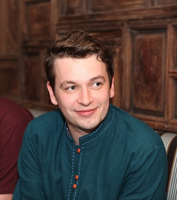

|  |
Jimmy ClarkeFounder and Managing Director of Farthing Communications Over the past decade I've pioneered the use of marketing automation in SMEs, International NGOs and political campaigns. Helping them build stronger relationships and increase their revenue. I've done this as a senior marketing manager and as a communications consultant for international businesses and high profile non-profits. Past clients include Oxfam in Vietnam, regional law firms, large video production companies, financial advisers, Save the Children and Georgetown University. Recently I acquired an MBA from a top UK business school and professional qualifications in strategic management and consulting. I currently manage my own boutique marketing automation firm and run a campaign group called Devolve. |
| Date | Experience |
|---|---|
| Dec 2018 - Present | Founder & Managing Director at Farthing Communications |
| Dec 2016 - May 2018 | Head of Marketing & Operations Change at Peel & Stone |
| June 2015 - Dec 2016 | Head of Marketing at Wide Eyed Vietnam |
| Aug 2014 - Mar 2015 | Communications Consultant at Georgetown University & Svae the Children Uganda |
| Dec 2013 - May 2015 | Communications Consultant at Oxfam in Vietnam |
| Sep 2013 - Jan 2014 | Policy Advisor at Paz y Desarollo Vietnam |
| Jan 2012 - June 2013 | Founder & General Manager at the Personal Support Unit |
| Jun 2011 - Jun 2012 | Training and Communication Consultant at B'n'T Venues |
| 2010 - 2011 | Regional Campaign Assistant at Electoral Reform Society |
| Date | Course |
|---|---|
| Jan 2018 - Jan 2019 | MBA in Global Business Strategy from Coventry University |
| Sep 2018 - Dec 2018 | Level 7 Certificate in Professional Consultancy from CMI |
| Sep 2018 - Dec 2018 | Level 7 Award in Strategic Management from CMI |
| 2006 - 2009 | BSc in Public Policy Government & Management from the University of Birmingham |